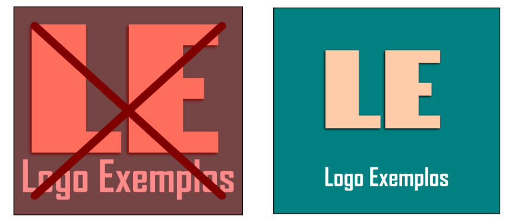
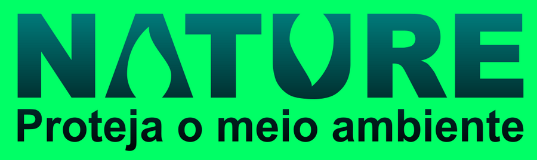
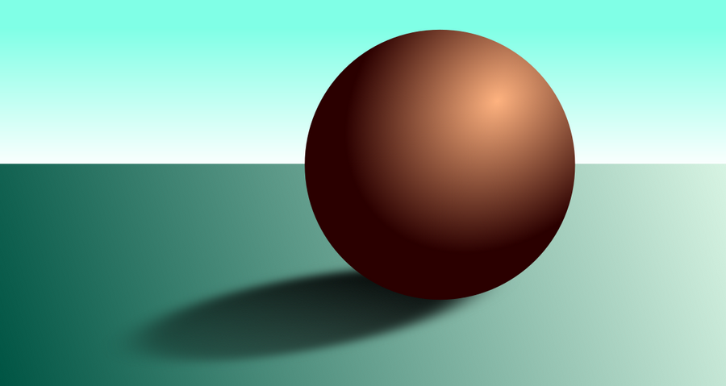

Espaço vazio e espaço negativo
Especialmente em artes para publicidade visual, mas também em qualquer tipo de arte, é necessário um cuidado com a poluição do desenho, um desenho muito cheio de elementos pode se tornar difícil de compreender ou até mesmo tirar sua beleza, para isso, sempre é preciso manter uma certa quantidade de espaço vazio entre os elementos que são independentes do plano de fundo, uma arte limpa tende a ser mais elegante, concisa, e clara na mensagem que deseja transmitir.
A regra base é de que pelo menos 50% do espaço da arte deve estar vazio.
Em relação ao espaço negativo, ele pode ser um instrumento ou uma armadilha. O espaço vazio dentro de um objeto, pode se tornar um novo objeto, tendo uma forma especial que combine com a mensagem da arte, e em casos onde não há intenção de se utilizar o espaço vazio, o cuidado deve ser mantido para que ele não transmite uma mensagem que não se desejaria transmitir.
Mas pode também ser um excelente instrumento, veja o exemplo a seguir:
Observe como o espaço vazio é utilizado para criar a forma de folha nas letras A e U complementando a mensagem da arte.

Neste exercício faremos algo bem simples, na realidade, o exercício mais simples que existe para se treinar luz e sombra, que é desenhar uma esfera iluminada.
Neste exercício faremos tudo com gradientes, mas lembre-se que em muitos casos é preferível fazer luzes e sombras com mais contraste apenas criando curvas com cores mais claras e mais escuras.
Note que todos os elementos possuem gradientes, e no caso da sombra projetada, é uma transparência gradiente. Se houver dúvidas, você pode solicitar ao seu professor o arquivo deste exercício ou baixá-lo do site para ver como os efeitos foram feitos.